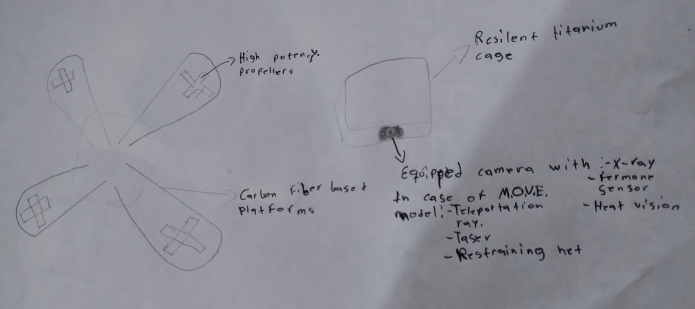

Drugged? Moved
Drugging away the burns? We'll burn away the drugs.

How does it work?
Our models of drone serve different purposes, but externally they are all the same. EYES(Enchanced Yield Enforcement System) especialized in looking out and recording the institution, while teachers and other personal can relax and take a well deserved rest. MOVE(Molecular Overhaul and Vectorized Export) is in charge of the teleportation of the ones that go in the way of drugs. This two magnific friends make dealing with drugs as if there was not problem at all, never easier.
What People Are Saying
Elon Musk: "I tried LSD and woke up in Greenland. 10/10 would hallucinate again."
Oprah Winfrey: "They say intervention is love. Drugged? Moved is intense love."
Keanu Reeves: "Woke up in a facility. Thought it was The Matrix. It wasn't. It was better."
Björk: "A symphony of teleportation and justice."
Pricing (in COP)
- Standard Surveillance Drone: 3,200,000 COP
- Teleportation-Enabled Model: 8,750,000 COP
- Facility Subscription (Monthly): 540,000 COP
Known Drawbacks
- Failed Teleportation Events (0.4%): May result in partial reformation (e.g., missing shoes, eyebrows, or spatial dislocation)
- Phantom body sensations post-teleport
- Facility misassignments (rare but dramatic)
Deployed In
- Reykjavík, Iceland
- Medellín, Colombia
- Kyoto, Japan
- Johannesburg, South Africa
- Hobart, Australia